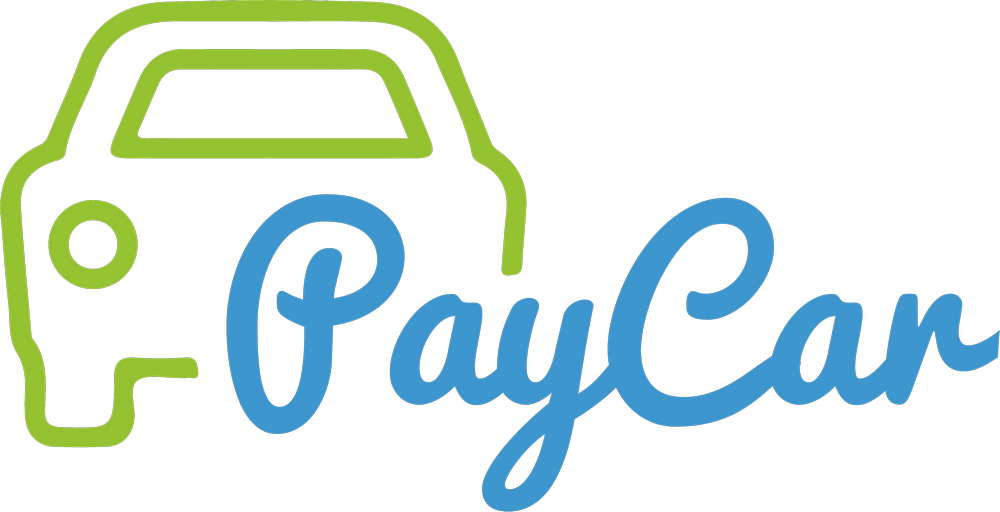

<mat-sidenav-container class="sidenav-container">
  <mat-sidenav #drawer class="sidenav" fixedInViewport
      [attr.role]="(isHandset$ | async) ? 'dialog' : 'navigation'"
      [mode]="(isHandset$ | async) ? 'over' : 'side'"
      [opened]="(isHandset$ | async) === false">
    <mat-toolbar class="logo-container">
      
    </mat-toolbar>
    <mat-nav-list>
      <button mat-button routerLink="/home">
        <mat-icon>home</mat-icon>
        Home
      </button>
      <button mat-button routerLink="/run">
        <mat-icon> trending_up</mat-icon>
        Realizar corridas
      </button>
      <button mat-button routerLink="/history">
        <mat-icon>history</mat-icon>
        Historial de corridas
      </button>
      <button mat-button routerLink="/bank">
        <mat-icon>savings</mat-icon>
        Financieras
      </button>
      <button mat-button (click)="openDialog()">
        <mat-icon>logout</mat-icon>
        Cerrar sesión
      </button>
    </mat-nav-list>
  </mat-sidenav>
  <mat-sidenav-content>
    <mat-toolbar class="mat-toolbar">
      <button
        type="button"
        aria-label="Toggle sidenav"
        mat-icon-button
        (click)="drawer.toggle()"
        *ngIf="isHandset$ | async">
        <mat-icon aria-label="Side nav toggle icon">menu</mat-icon>
      </button>
      <span>PayCar - Crédito vehicular</span>
    </mat-toolbar>
    <!-- Add Content Here -->
    <router-outlet></router-outlet>
  </mat-sidenav-content>
</mat-sidenav-container>
